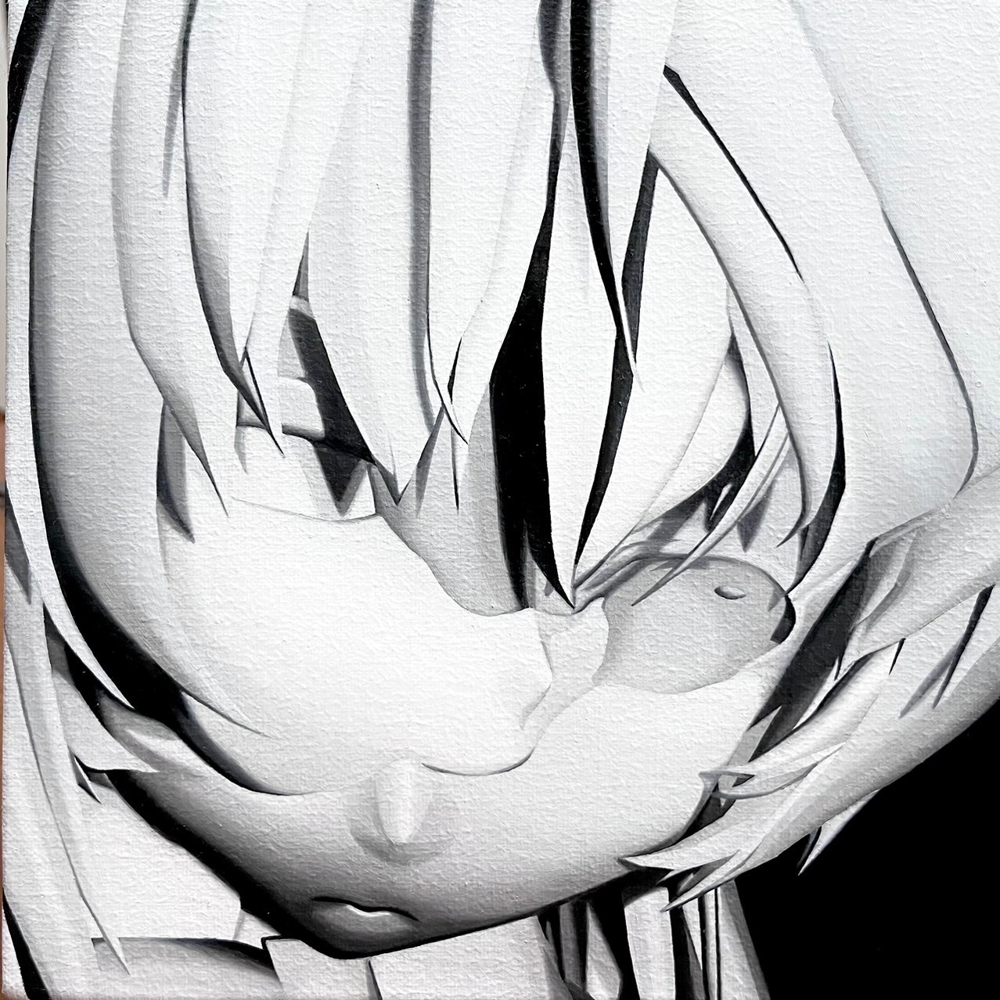
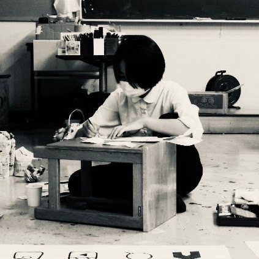

About
日本に死生学を広めたアルフォンス・デーケンは、
「死」とは能動的に達成すべき課題であり、単に運命を受動的に感受することではないと言った。
死の意義の探求は、そのまま生の意義を深める道でもある、と。
近年では日本でも、そういった"デス・エデュケーション（死の準備教育）"の意識が高まってきている。
"終活"や"生前葬"といった言葉が広まり、人々はより良い死を迎えるための行動選択を模索している最中だ。
福島県二本松市某所。
田圃に囲まれた道を進み坂道を上がると見えてくる、土壁とトタン屋根が印象的な古民家。
—————私たちの祖母の家。
この家に死が近づいている。築年数150年を超える家の老朽化は深刻だ。
天井からは梁に積もった埃が降ってくるし壁には所々穴が空いている。
私たちはいつか迎えるこの家の決定的な死を見届けることができないかもしれない。
しかしこの家の限りある残りの生のため、そしてふさわしい死のために出来ることがある。
いわば、家の生前葬だ。
『こいねがうとき』は4人の作家による、とある古民家の歴史についてのプロジェクトである。
第1期は古民家での展示、第2期以降ウェブや都内会場でのアーカイブ展示で展開される。
これは、私たちの弔いの記録。
Work
{kind=link}
{kind=link}
{kind=link}
{kind=link}
{kind=link}
{kind=link}
{kind=link}
{kind=link}
Artist

髙木 優希
1994 福島県生まれ
2021 東京藝術大学 絵画科油画専攻 卒業
2022 東京藝術大学大学院 美術研究家修士課程 在籍中
=展示歴=
2021 「ゆうれいのいないところで」 ARTDINE/東京
2022 「鳥はいまどこを飛ぶか」 貸民家プライベイト/東京

1997 福島県生まれ
髙木 早希
1997 福島県生まれ
2015 福島県立福島西高等学校 デザイン科学科 卒業
=展示歴=
2021 「Navigated Locomotion」 WhiteGallery/千駄木
2022 「Oの魅惑」 myheirroom
髙木 真希
1999 福島県生まれ
2018 福島県立福島商業高等学校 経営ビジネス科 卒業
2022 山形大学 人文社会科学部 経済•マネジメントコース 卒業

2005 福島県生まれ